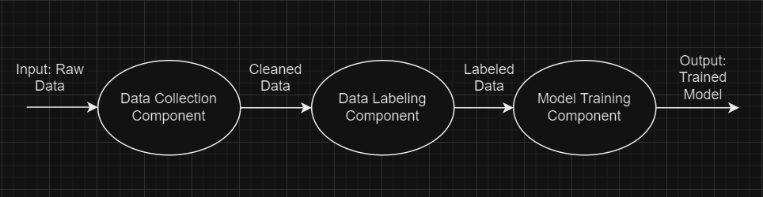
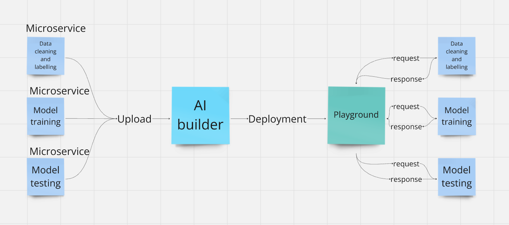

Introduction#
This material provides a clear and structured approach to creating machine learning pipelines composed of distinct components, or microservices, and deploying them using the AI on Demand platform (https://aiexp-dev.ai4europe.eu/#/home). Our goal is to offer a comprehensive guide focused on developing these components, helping more users effectively utilize the AI on demand platform’s services and tools. The guide covers the necessary technologies and tools, along with a practical, step-by-step example.
To understand the final product’s functionality and structure, we’ll first explore the basic concept of a pipeline made up of components.
A machine learning pipeline automates the workflow needed to produce a model. It typically includes stages like data collection and labeling, model training and evaluation, and model deployment. This material breaks these stages down into distinct microservices or components, each responsible for one stage. When interconnected, these components form a complete pipeline that generates a specific ML model.

The diagram above shows a basic pipeline architecture. Notice how the output of one component serves as the input for the next. For example, the cleaned data produced by the data collection component becomes the input for the data labeling component. This setup requires communication between the components. If you deploy your pipeline using the AI on demand platform, the platform handles this communication for you. Your main task is to ensure that the output of one component matches the input of the next.
Dividing the pipeline into components serves two purposes: it allows for the creation of a component library and takes advantage of microservices architecture. Microservices offer benefits like improved scalability, as each component can be scaled independently, and enhanced fault isolation, meaning that issues in one component are less likely to affect the entire system. These components can be combined in various ways to create different pipelines and, consequently, different models. Once created, the components can be uploaded to the the AI on demand platform, where they can be connected to form the pipeline. The pipeline can then be deployed either through the website or locally using the Playground app, part of the same project as the AI on demand platform.

The diagram above provides an overview of the process for deploying a pipeline using the AI on demand platform. Each service must be created and uploaded to the the AI on demand platform, where they can be connected and deployed. Deployment occurs through the “Playground” which handles communication between components and allows interaction with the pipeline.
Successfully creating a pipeline requires familiarity with various technologies and tools. Below is a list of those used in the example provided in this material, with some tools being prerequisites for uploading components to the the AI on demand platform:
Python
Virtual Environments
Machine Learning
Flask
HTML
Protocol Buffers
gRPC
Containerization
Docker
Microservices
SSL
Kubernetes
To help you build the components for pipelines, we will provide foundational insights into the required technologies listed in bold. Additionally, we will offer a step-by-step example demonstrating how to use the other listed technologies.